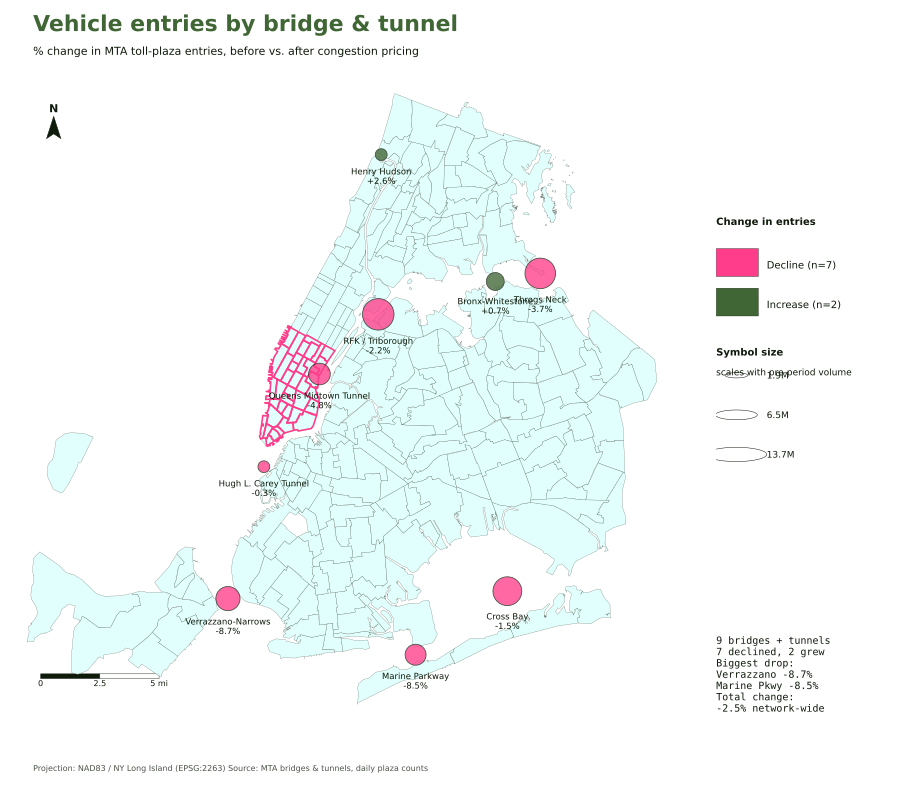
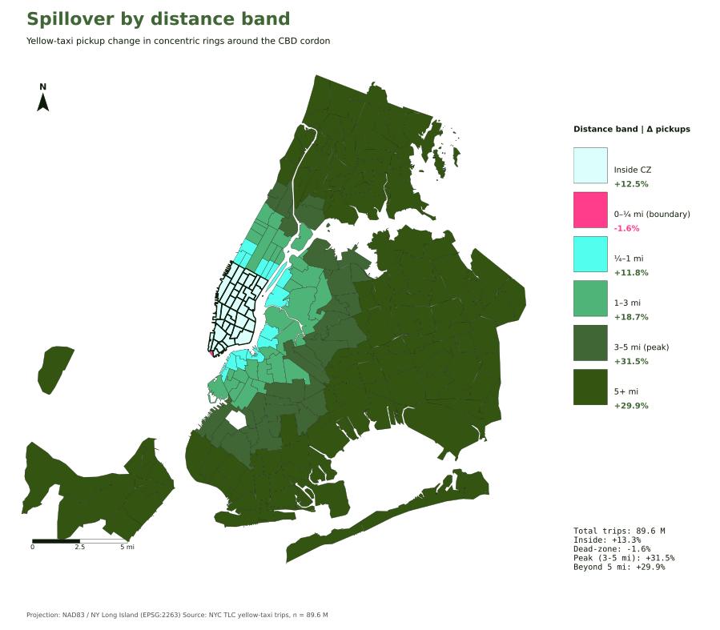
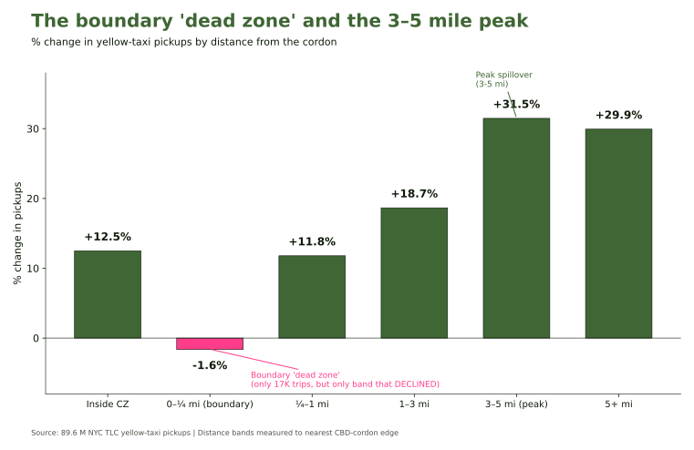
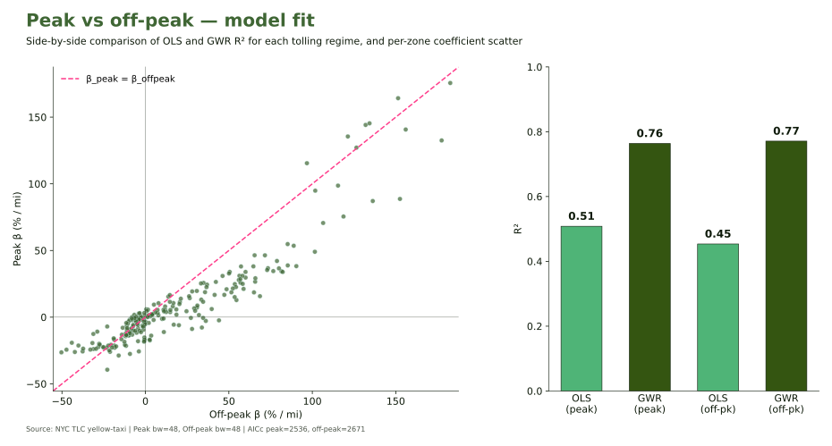
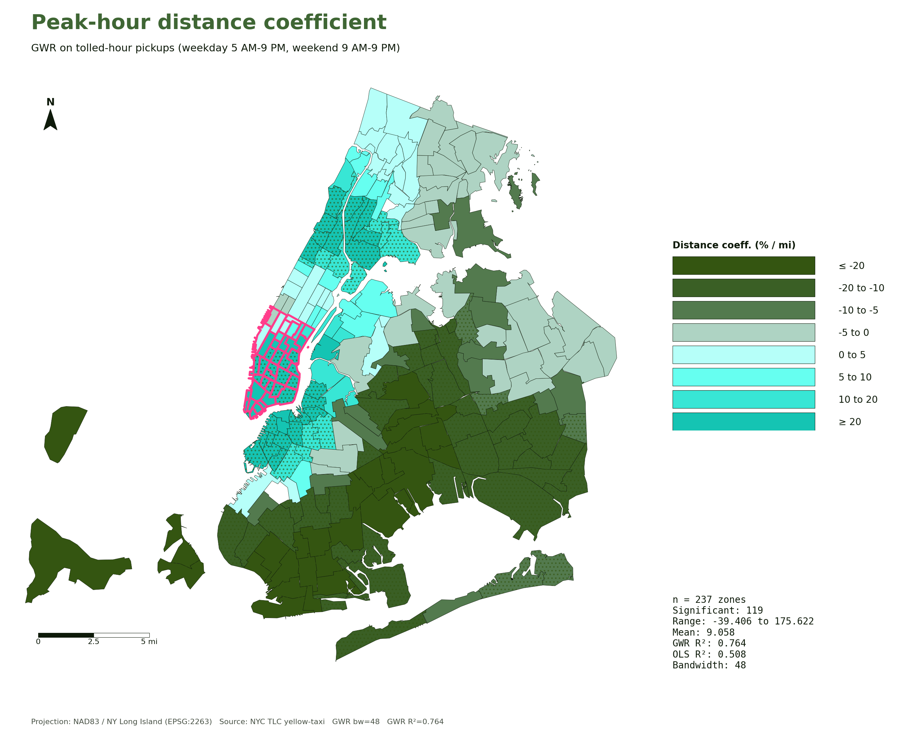

Title
Fig. 06 — MTA bridge & tunnel entries

Fig. 02 — % change in yellow-taxi pickups, by zone

Fig. 05 — Concentric distance bands from the cordon

Fig. 07 — Pickup change by distance band

Fig. 11 — Peak vs off-peak: OLS and GWR R²

Fig. 08 — Local distance coefficient (GWR β), peak hours
Fig. 08 — GWR β, peak hours

Fig. 09 — GWR β, off-peak hours

Fig. 10 — GWR β, difference-in-differences
Fig. 11 — DD model fit comparison

Fig. 03 — Local R² (where the model fits)
Fig. 10 — The cordon-attributable component (peak − off-peak)